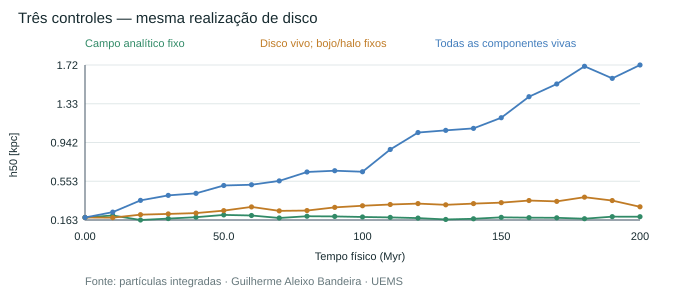
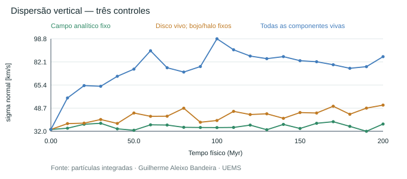
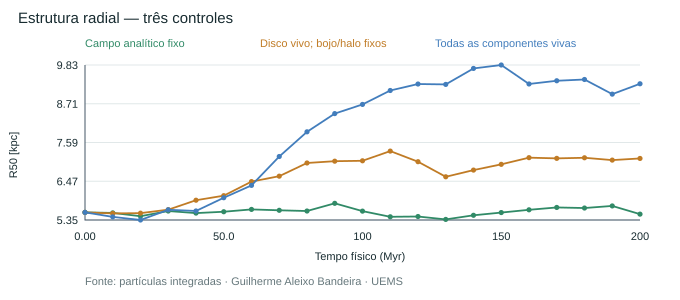
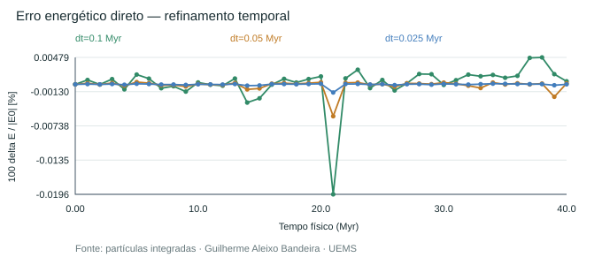
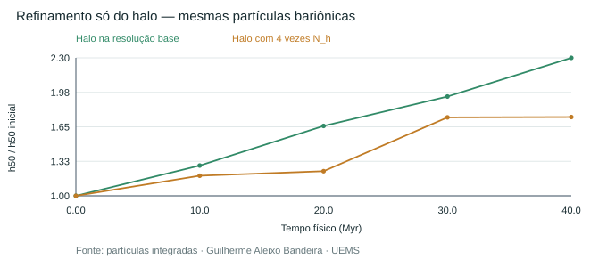

Estabilidade global não demonstrada. 43 ensaios CPU e 2 comparações CPU/GPU novos. Os dois erros corrigidos são de referência temporal e potencial; o engrossamento não foi escondido.
N-base=800, 360 partículas de disco, semente 2026. Campos fixos removem a resposta dinâmica das respectivas componentes. Resultados de baixa resolução, sem extrapolação garantida ao limite não colisional.
| Controle | h50 inicial [kpc] | h50 em 200 Myr [kpc] |
|---|---|---|
| Campo analítico fixo | 0,188514 | 0,19633 |
| Disco vivo; bojo/halo fixos | 0,188514 | 0,295881 |
| Todas as componentes vivas | 0,188514 | 1,72164 |





O integrador mostrou segunda ordem nos sistemas simples. A mesma realização engrossou em Float64 e Float32. Refino do halo reduziu o engrossamento nas três sementes, mas nenhum ensaio demonstrou equilíbrio global. Velocidades Gaussianas locais de Jeans não constituem uma DF estacionária demonstrada; preparação não suavizada e evolução Plummer também diferem.
35.200 Myr = 35,2 Gyr. A execução específica citada não foi preservada nesta auditoria; não se inventaram seus estados. O relógio anterior diferia do dt GPU efetivo em apenas ~525 anos nesse intervalo.
Dados: Séries CSV · Anéis CSV · Resumo JSON · CPU/GPU JSON. Relatório integral local: AUDITORIA_FISICA_NUMERICA_DISCO.md.
Fontes: Yurin & Springel (2014), Sellwood (2013), Vasiliev (2019), exemplo oficial AGAMA.